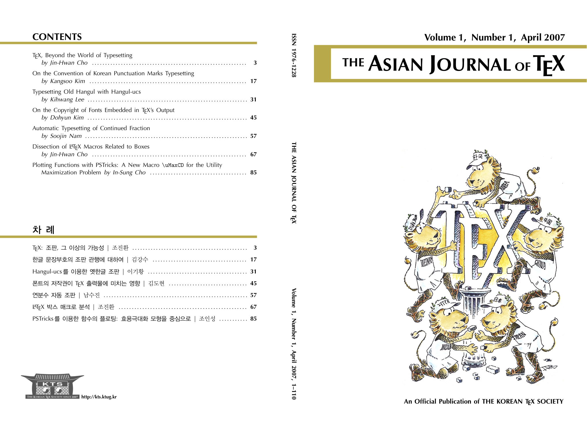

Published on April 30, 2007

TeX, Beyond the World of Typesetting (TeX: 조판, 그 이상의 가능성)
by Jin-Hwan Cho (조진환) 3-14타이포그래피는 넓은 의미에서 출판에 관한 모든 예술 및 기술들을 아우른다. 조판은 타이포그래피 안에서 글자와 그림들로 이루어진 조각 또는 부품들을 판면에 배치하는 과정을 의미한다. 이러한 배치가 얼마나 아름답고 읽기 쉬운가 하는 디자인 측면과 얼마나 간편하고 편리한가 하는 기술적인 측면에서 조판은 발전해 왔다. 이 글에서는 조판의 이러한 측면들과 관련해 탁상출판 소프트웨어 및 워드프로세서, 그리고 TeX 시스템이 어떠한 특징을 가지고 있고, 어떻게 발전해 왔는지 살펴본다. 이러한 논의를 통해 TeX 시스템의 과거를 돌아보고, 현재 위치를 가늠하고, 그리고 미래를 조망한다.
On the Convention of Korean Punctuation Marks Typesetting (한글 문장부호의 조판 관행에 대하여)
by Kangsoo Kim (김강수) 17-30한글 문헌의 조판에 있어서 제기되는 문제들은 여러 가지가 있지만 그 중에서 문장부호의 처리에 관한 부분을 빼놓을 수 없다. 한중일 가운데 우리 문헌만이 문장부호에 영문자 부호를 차용하여 쓰고 있다. 이로 인하여 한글 폰트와 영문자 폰트의 베이스라인의 불일치, 디자인 컨셉의 불일치, 그리고 문장부호의 시각적 효과의 상쇄와 같은 문제가 발생한다. 보다 아름다운 한글 문헌의 조판을 위해서 더 나은 문장부호 조판 방식이 없을 것인지 모색해본다.
Typesetting Old Hangul with Hangul-ucs (Hangul-ucs를 이용한 옛한글 조판)
by Kihwang Lee (이기황) 31-43This article describes a method of typesetting old Hangul with hangul-ucs, a LaTeX package for handling UTF-8 encoded Korean texts. Typesetting old Hangul is not a trivial task, which involves a number of tough challenges such as text input method, character encoding, and font-related matters, etc. Hangul-ucs offers a powerful old Hangul typesetting facility which excels conventional document preparation tools in many ways. To serve as a practical guide, this article shows the old Hangul typesetting process using hangul-ucs based on real-world examples. A few technical and theoretical issues regarding the principles of character composition of Hangul and character code system are also presented hoping that it will ultimately provide better understanding of the wide range of technical problems underneath diverse Hangul processing tasks including typesetting old Hangul with LaTeX.
On the Copyright of Fonts Embedded in TeX’s Output (폰트의 저작권이 TeX 출력물에 미치는 영향)
by Dohyun Kim (김도현) 45-56Now becoming prevailingly PostScript or PDF, the output format of TeX engines or TeX-related utilities is able to embed copyrighted fonts, raising serious legal questions of intellectual property. This essay tries to clarify when the distribution of TeX’s output is hindered by intellectual property of fonts. Roughly summarizing, output files embedding scalable fonts with proprietary license cannot be publicly distributed without manifest permission from the copyright holder. Certainly, scalable GPL’d fonts are also copyrighted works as computer program. Contrary to the interpretation by FSF, however, literary work contained in a PDF is not a derived work of embedded fonts. We can safely utilize GPL’d fonts in producing TeX’s output without worrying about GPL’s “viral effect.”
Automatic Typesetting of Continued Fraction (연분수 자동 조판)
by Soojin Nam (남수진) 57-65TeX 은 조건문, 반복문, 매크로, 파일 입출력과 같은 다른 대부분의 컴퓨터 프로그래밍 언어가 가지고 있는 특징을 가지고 있다. 이러한 컴퓨터 프로그래밍 언어로서의 TeX 은 이를 워드프로세서와 뚜렷이 구별하게 한다. 그리고 TeX 이 가지고 있는 여러가지 프로그래밍 언어의 특성을 가장 잘 표현하는 것이 “매크로” 일 것이다. 이 글에서는 주어진 분수를 연분수로 바꾸는 매크로를 작성하면서 매크로 프로그래밍 언어로서의 TeX 의 면모를 살펴본다.
Dissection of LaTeX Macros Related to Boxes (LaTeX 박스 매크로 분석)
by Jin-Hwan Cho (조진환) 67-84Boxes and glue are the key to understand how TeX makes complicated pages from individual characters and figures. Character boxes are put together into line boxes horizontally, and the line boxes are stacked vertically into paragraph boxes which finally compose page boxes. We analyze how LaTeX macro commands related to boxes are composed of TEX primitives, and how the commands function. A few examples are prepared to show characteristics of the commands, and to focus the points to which ordinary LaTeX users pay attention. The paper will be useful for LaTeX users not only to make better LaTeX documents but also to write their own style files.
Plotting Functions with PSTricks: A New Macro
\uMaxCDfor the Utility Maximization Problem
(PSTricks를 이용한 함수의 플로팅: 효용극대화 모형을 중심으로)
by In-Sung Cho (조인성) 85-109Though the PostScript language is very powerful to plot functions with PSTricks, its Reverse Polish Notation(RPN) convention is somewhat difficult to get used to. This article examines how to plot functions with PSTricks using general algebraic notation. Some examples of plotting functions in economics are provided. This article also introduces a new macro
\uMaxCD, based on RPN, which provides an intuitive tool to plot graphics related to the utility maximization problem.